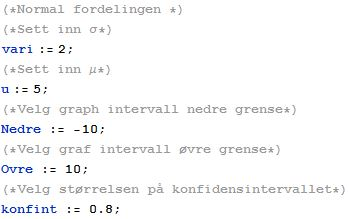

<h2>Normal konfidensintervall</h2>
<br>
Endringer gjøres på de første linjene (som forklart), deretter trykker du Shift+Enter.<br>

<textarea resizable="true" length="100%" readonly cols="50" rows="30">
(*Normal fordelingen *)
(*Sett inn \[Sigma]*) 
vari := 2;
(*Sett inn \[Mu]*) 
u := 5;
(*Velg graph intervall nedre grense*)
Nedre := -10;
(*Velg graf intervall øvre grense*)
Ovre := 10;
(*Velg størrelsen på konfidensintervallet*)
konfint := 0.8;


Temp := NormalDistribution[u, vari];
f[t_] := PDF[Temp, t];
F[t_] := CDF[Temp, t];
Ff[t_] := InverseCDF[Temp, t];
theInterval[t_, start_, end_] := 
 UnitStep[t - Ff[start]] (1 - UnitStep[t - Ff[1 - end]])
cF[t_, start_, end_] := f[t] theInterval[t, start, end];
ciPlot[start_, end_, range_] := 
 Plot[{cF[x, start, end], f[x]}, {x, Nedre, Ovre}, PlotRange -> All, 
  Filling -> {1 -> {Axis, {Green}}, 2 -> {{1}, {White}}}]
ciIPlot[start_, end_, range_] := 
 Plot[0.1 theInterval[x, start, end], {x, Nedre, Ovre}, 
  PlotRange -> {0, 1}, Filling -> {1 -> {Axis, {Red}}}]
cendPlot[start_, end_, range_] := 
 Plot[{cF[x, start, end], f[x]}, {x, Nedre, Ovre}, PlotRange -> All, 
  Filling -> {1 -> {Axis, {White}}, 2 -> {{1}, {Red}}}]
f[x]
F[x]
Ff[x]
Mean[Temp]
F[Mean[Temp]] // N
Show[Plot[f[t], {t, Nedre, Ovre}], 
 DiscretePlot[f[Mean[Temp]], {k, {Mean[Temp]}}, 
  FillingStyle -> RGBColor[3, 0, 0, 1], 
  PlotStyle -> RGBColor[3, 0, 0, 0]]]

(*Venstre intervall*)

Show[
 ciPlot[0, 1 - konfint, 0.03], 
 DiscretePlot[f[Mean[Temp]], {k, {Mean[Temp]}}, 
  FillingStyle -> RGBColor[3, 0, 0, 1], 
  PlotStyle -> RGBColor[3, 0, 0, 0]]
 ]
ciIPlot[0, 1 - konfint, 0.03]
{Ff[0.0], Ff[konfint]}

(*Høyre intervall*)
Show[
 ciPlot[1 - konfint, 0, 0.03], 
 DiscretePlot[f[Mean[Temp]], {k, {Mean[Temp]}}, 
  FillingStyle -> RGBColor[3, 0, 0, 1], 
  PlotStyle -> RGBColor[3, 0, 0, 0]]
 ]
ciIPlot[1 - konfint, 0, 0.03]
{Ff[1 - konfint], Ff[1]}

(*Symetriskkonfidensintervall om \[Mu]*)
Show[
 ciPlot[F[Mean[Temp]] - konfint/2, 1 - konfint/2 - F[Mean[Temp]], 
  0.03], DiscretePlot[f[Mean[Temp]], {k, {Mean[Temp]}}, 
  FillingStyle -> RGBColor[3, 0, 0, 1], 
  PlotStyle -> RGBColor[3, 0, 0, 0]]
 ]
ciIPlot[F[Mean[Temp]] - konfint/2, 1 - konfint/2 - F[Mean[Temp]], 0.03]
{Ff[F[Mean[Temp]] - konfint/2], Ff[F[Mean[Temp]] + konfint/2]}
</textarea>
<a href="resources/Normal_Konfidensintervall.nb">download .nb file</a>